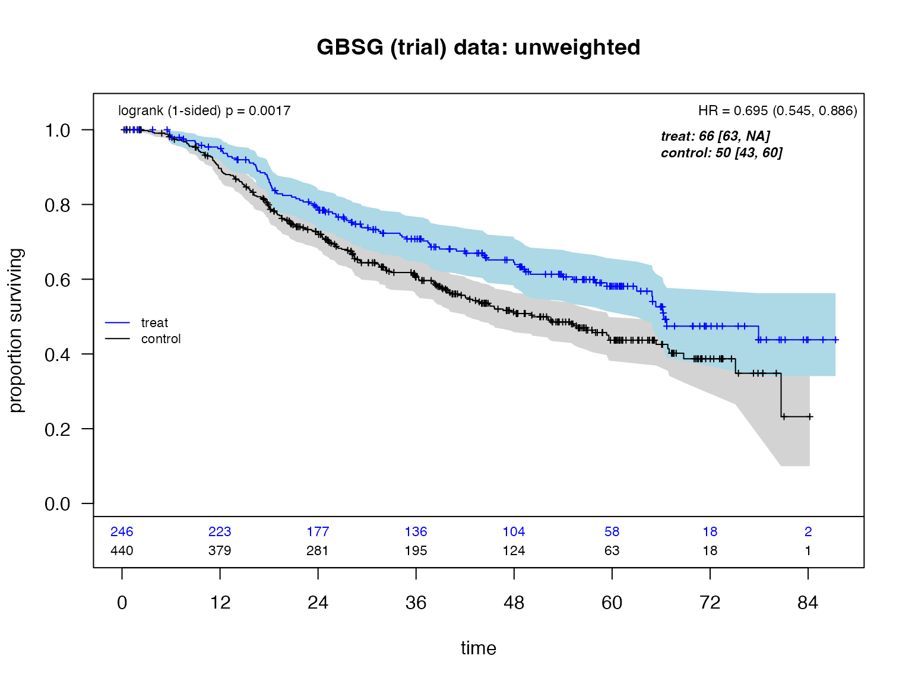
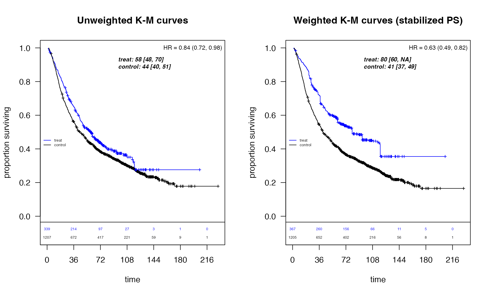
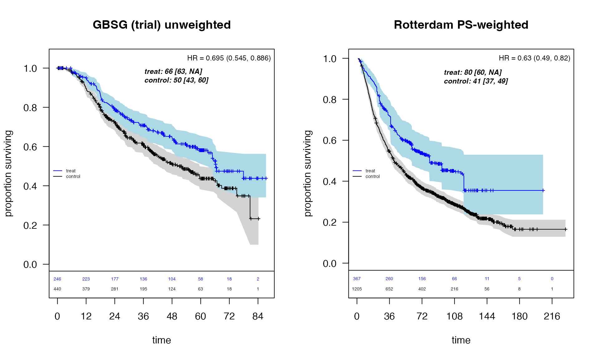
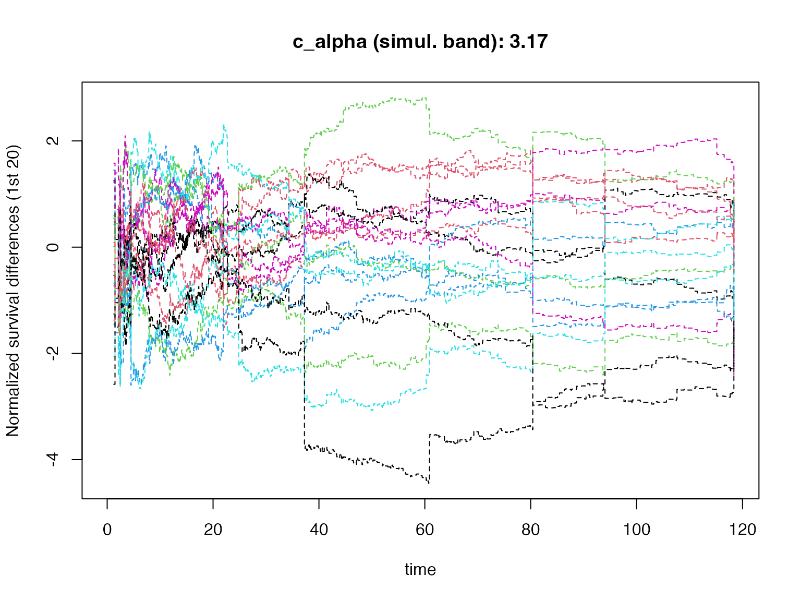
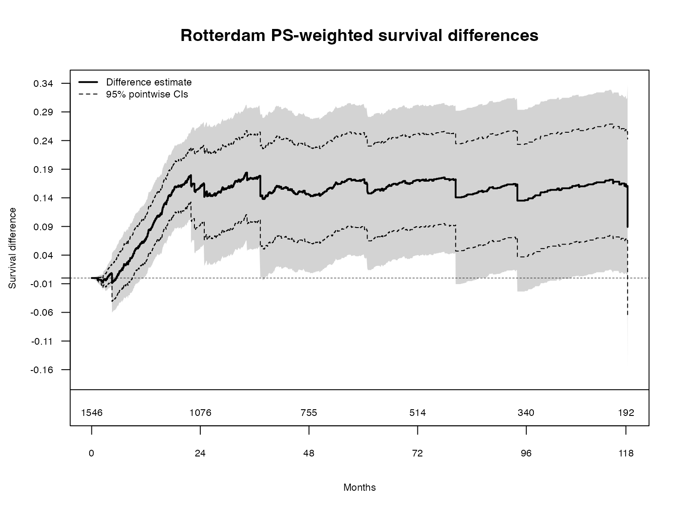
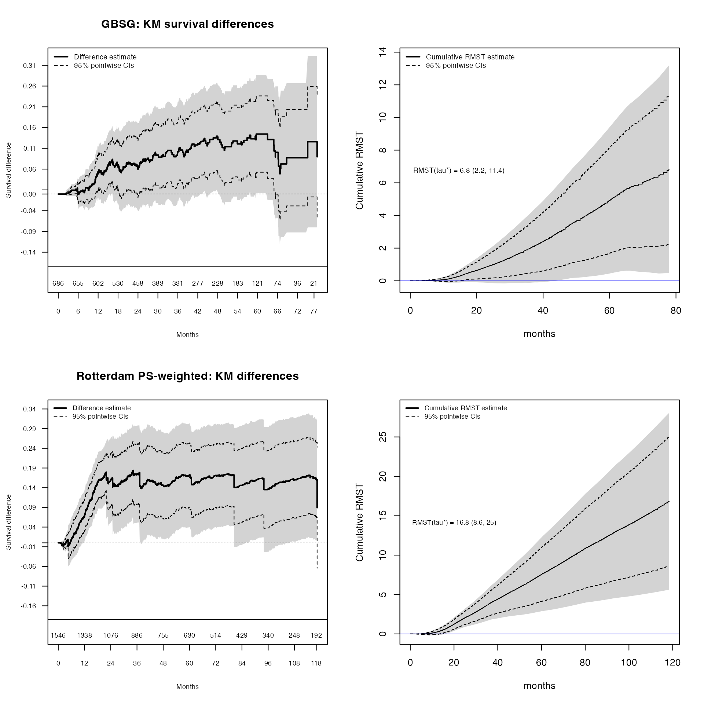

Martingale Resampling Applications in Survival Analysis
Larry Leon, Methodology Research
2026-02-12
Source:vignettes/articles/martingale_resampling_applications.Rmd
martingale_resampling_applications.Rmd
knitr::opts_chunk$set(
echo = TRUE,
message = FALSE,
warning = FALSE,
fig.width = 10,
fig.height = 6
)
options(warn = -1)
library(survival)
library(ggplot2)
library(weightedsurv)Introduction
Martingale resampling (perturbation resampling) provides a powerful and flexible approach to inference in survival analysis. While asymptotic distributions are available for many common analysis methods, resampling-based inference
- May have greater accuracy in small samples, and
- Extends to complex processes where asymptotics are not readily available (Dobler, Beyersmann, and Pauly 2017).
This vignette demonstrates martingale resampling applications in the
weightedsurv package using two breast cancer datasets:
- GBSG — a randomized clinical trial evaluating hormonal therapy (Schumacher et al. 1994).
- Rotterdam — an observational study where propensity-score weighting is used to adjust for confounding (Royston and Altman 2013).
The examples include:
- Simultaneous confidence bands for survival (KM) arm differences
- Cumulative RMST curves with pointwise and simultaneous bands across follow-up (Zhao et al. 2016)
- Weighted analyses using propensity-score (IPTW) weights
Brief Review of Counting Processes
We observe where for subjects in group ():
- and
- The at-risk process:
- The counting process:
The aggregate counting processes count the observed events through time for the control () and experimental () arms.
The Weighted Log-Rank Test
The weighted log-rank (WLR) statistic of class is
where with Fleming–Harrington weights , , .
Martingale Representation
Under the null, can be written as a sum of martingale integrals:
where the ’s can be replaced by the corresponding martingales under the null.
Resampling Recipe
The resampled statistic is constructed as:
where are i.i.d. random variables. The martingale increments are represented by independent standard normal random variables (independent of the data) that are multiplied by the observable counting process increments , with unknown parameters estimated by consistent estimators (Dobler, Beyersmann, and Pauly 2017).
GBSG Trial Data: Unweighted Analysis
Data Preparation
We use the GBSG randomized trial data from the survival
package, converting follow-up from days to months.
Counting Process Summary and Log-Rank Test
The df_counting() function prepares the survival data in
counting-process format and computes the standard log-rank test
(Fleming–Harrington
),
weighted log-rank statistics, and Cox model results.
dfcount_gbsg <- df_counting(
df = df_gbsg,
tte.name = tte.name,
event.name = event.name,
treat.name = treat.name,
arms = arms,
by.risk = 12,
scheme = "fh",
scheme_params = list(rho = 0, gamma = 0),
lr.digits = 4,
cox.digits = 3
)Kaplan-Meier Curves
plot_weighted_km(
dfcount = dfcount_gbsg,
conf.int = TRUE,
show.logrank = TRUE,
ymax = 1.05,
xmed.fraction = 0.725
)
title(main = "GBSG (trial) data: unweighted")
Rotterdam Observational Data: Propensity-Score Weighted Analysis
Data Preparation and Propensity Score Estimation
The Rotterdam dataset is observational, so we use inverse probability of treatment weighting (IPTW) with stabilized propensity-score weights to adjust for confounding.
gbsg_validate <- within(rotterdam, {
rfstime <- ifelse(recur == 1, rtime, dtime)
t_months <- rfstime / 30.4375
time_months <- t_months
status <- pmax(recur, death)
ignore <- (recur == 0 & death == 1 & rtime < dtime)
status2 <- ifelse(recur == 1 | ignore, recur, death)
rfstime2 <- ifelse(recur == 1 | ignore, rtime, dtime)
time_months2 <- rfstime2 / 30.4375
grade3 <- ifelse(grade == "3", 1, 0)
treat <- hormon
event <- status2
tte <- time_months
id <- as.numeric(1:nrow(rotterdam))
SG0 <- ifelse(er <= 0, 0, 1)
})
df_rotterdam <- subset(gbsg_validate, nodes > 0)We fit a propensity score model and compute stabilized IPTW weights:
fit.ps <- glm(
treat ~ age + meno + size + grade3 + nodes + pgr + chemo + er,
data = df_rotterdam,
family = "binomial"
)
pihat <- fit.ps$fitted
pihat.null <- glm(treat ~ 1, family = "binomial", data = df_rotterdam)$fitted
wt.1 <- pihat.null / pihat
wt.0 <- (1 - pihat.null) / (1 - pihat)
df_rotterdam$sw.weights <- ifelse(df_rotterdam$treat == 1, wt.1, wt.0)
# Truncated weights (winsorized at 5th/95th percentiles)
df_rotterdam$sw.weights_trunc <- with(df_rotterdam,
pmin(pmax(sw.weights, quantile(sw.weights, 0.05)), quantile(sw.weights, 0.95))
)Unweighted vs. Weighted KM Curves
dfcount_rotterdam_unwtd <- df_counting(
df = df_rotterdam,
tte.name = tte.name,
event.name = event.name,
treat.name = treat.name,
arms = arms,
by.risk = 36,
risk.add = -50
)
dfcount_rotterdam_wtd <- df_counting(
df = df_rotterdam,
tte.name = tte.name,
event.name = event.name,
treat.name = treat.name,
arms = arms,
by.risk = 36,
risk.add = -50,
weight.name = "sw.weights"
)
par(mfrow = c(1, 2))
plot_weighted_km(
dfcount = dfcount_rotterdam_unwtd,
xmed.fraction = 0.4,
arm.cex = 0.475,
risk.cex = 0.45,
risk_offset = 0.125
)
title(main = "Unweighted K-M curves")
plot_weighted_km(
dfcount = dfcount_rotterdam_wtd,
xmed.fraction = 0.4,
arm.cex = 0.475,
risk.cex = 0.45,
risk_offset = 0.125
)
title(main = "Weighted K-M curves (stabilized PS)")
Comparison: GBSG Trial vs. Rotterdam PS-Weighted
par(mfrow = c(1, 2))
plot_weighted_km(
dfcount = dfcount_gbsg,
conf.int = TRUE,
xmed.fraction = 0.4,
ymax = 1.05,
arm.cex = 0.475,
risk.cex = 0.45
)
title(main = "GBSG (trial) unweighted")
plot_weighted_km(
dfcount = dfcount_rotterdam_wtd,
conf.int = TRUE,
xmed.fraction = 0.4,
arm.cex = 0.475,
risk.cex = 0.45
)
title(main = "Rotterdam PS-weighted")
The propensity-score weighted Rotterdam analysis shows a treatment effect pattern broadly consistent with the randomized GBSG trial, supporting the validity of the observational comparison after confounding adjustment.
Simultaneous Confidence Bands for Survival Differences
Rotterdam Weighted Survival Difference Bands
The plotKM.band_subgroups() function computes KM
survival difference estimates along with pointwise and simultaneous
confidence bands using martingale resampling. The simultaneous band
provides uniform coverage:
par(mfrow = c(1, 1))
temp_rotterdam <- plotKM.band_subgroups(
df = df_rotterdam,
xlabel = "Months",
ylabel = "Survival difference",
yseq_length = 5,
cex_Yaxis = 0.7,
risk_cex = 0.7,
tau_add = 42,
by.risk = 24,
risk_delta = 0.075,
risk.pad = 0.03,
ymax.pad = 0.125,
tte.name = tte.name,
treat.name = treat.name,
event.name = event.name,
weight.name = "sw.weights",
draws.band = 1000,
qtau = 0.025,
show_resamples = TRUE
)
legend("topleft",
c("Difference estimate", "95% pointwise CIs"),
lwd = c(2, 1), col = c("black"), lty = c(1, 2), bty = "n", cex = 0.7
)
title(main = "Rotterdam PS-weighted survival differences")
The grey traces show individual resampled processes (), illustrating the perturbation-resampling distribution from which the simultaneous band critical value is computed.
Cumulative RMST Curves Across Follow-Up
Combined Analysis: Trial and Observational Data
The restricted mean survival time (RMST) at time is defined as , the area under the survival curve up to . Rather than evaluating RMST at a single time point, we study the cumulative RMST curve across the entire follow-up period.
Simultaneous confidence bands for the RMST difference curve are constructed via martingale resampling, providing uniform coverage over the range of values (Zhao et al. 2016).
The cumulative_rmst_bands() function takes the fitted
object from plotKM.band_subgroups() and computes the
cumulative RMST curves with both pointwise and simultaneous bands:
draws <- 1000
par(mfrow = c(2, 2))
# --- GBSG: KM difference bands ---
temp_gbsg <- plotKM.band_subgroups(
df = df_gbsg,
Maxtau = NULL,
xlabel = "Months",
ylabel = "Survival difference",
yseq_length = 5,
cex_Yaxis = 0.7,
risk_cex = 0.7,
by.risk = 6,
risk_delta = 0.075,
risk.pad = 0.03,
tte.name = tte.name,
treat.name = treat.name,
event.name = event.name,
draws.band = draws,
qtau = 0.025,
show_resamples = FALSE
)
legend("topleft",
c("Difference estimate", "95% pointwise CIs"),
lwd = c(2, 1), col = c("black"), lty = c(1, 2), bty = "n", cex = 0.75
)
title(main = "GBSG: KM survival differences")
# --- GBSG: Cumulative RMST bands ---
get_bands_gbsg <- cumulative_rmst_bands(
df = df_gbsg,
fit = temp_gbsg$fit_itt,
tte.name = tte.name,
event.name = event.name,
treat.name = treat.name,
draws_sb = draws,
xlab = "months",
rmst_max_cex = 0.75
)
legend("topleft",
c("Cumulative RMST estimate", "95% pointwise CIs"),
lwd = c(2, 1), col = c("black"), lty = c(1, 2), bty = "n", cex = 0.75
)
# --- Rotterdam weighted: KM difference bands ---
temp_rotterdam2 <- plotKM.band_subgroups(
df = df_rotterdam,
xlabel = "Months",
ylabel = "Survival difference",
yseq_length = 5,
cex_Yaxis = 0.7,
risk_cex = 0.7,
tau_add = 42,
by.risk = 12,
risk_delta = 0.075,
risk.pad = 0.03,
ymax.pad = 0.125,
tte.name = tte.name,
treat.name = treat.name,
event.name = event.name,
weight.name = "sw.weights",
draws.band = draws,
qtau = 0.025,
show_resamples = FALSE
)
legend("topleft",
c("Difference estimate", "95% pointwise CIs"),
lwd = c(2, 1), col = c("black"), lty = c(1, 2), bty = "n", cex = 0.7
)
title(main = "Rotterdam PS-weighted: KM differences")
# --- Rotterdam weighted: Cumulative RMST bands ---
get_bands_rotterdam <- cumulative_rmst_bands(
df = df_rotterdam,
fit = temp_rotterdam2$fit_itt,
tte.name = tte.name,
event.name = event.name,
treat.name = treat.name,
weight.name = "sw.weights",
draws_sb = draws,
xlab = "months",
rmst_max_cex = 0.7
)
legend("topleft",
c("Cumulative RMST estimate", "95% pointwise CIs"),
lwd = c(2, 1), col = c("black"), lty = c(1, 2), bty = "n", cex = 0.7
)
Top row (GBSG trial): The KM survival difference (left) shows the instantaneous treatment gap at each time point, while the cumulative RMST difference (right) shows the accumulated treatment benefit in months gained. The RMST curve integrates the KM difference, providing a clinically interpretable time-scale summary.
Bottom row (Rotterdam weighted): The same pair of analyses using propensity-score weighted estimation from the observational Rotterdam data. The weighted RMST curve shows a cumulative treatment benefit that grows steadily over follow-up, consistent with the GBSG trial findings.
Workflow Summary
The typical workflow for martingale resampling analyses in
weightedsurv follows two key steps.
Step 1: KM difference bands. Call
plotKM.band_subgroups() to estimate survival differences
and compute simultaneous confidence bands. This function returns a
fitted object containing the KM estimates and resampling results.
Step 2: Cumulative RMST bands. Pass the fitted
object from Step 1 to cumulative_rmst_bands(), which
computes the cumulative RMST difference curve and its simultaneous bands
using the same fitted survival estimates.
For weighted analyses (e.g., propensity-score adjustment), both
functions accept a weight.name argument specifying the
column of subject-specific weights in the data frame. The resampling
distribution is modified accordingly, with the at-risk process
replaced by the weighted version
.
# Step 1: KM survival difference with simultaneous bands
fit <- plotKM.band_subgroups(
df = mydata,
tte.name = "tte", treat.name = "treat", event.name = "event",
weight.name = "ps_weights", # optional: for weighted analysis
draws.band = 1000
)
# Step 2: Cumulative RMST bands (uses fit from Step 1)
rmst_result <- cumulative_rmst_bands(
df = mydata,
fit = fit$fit_itt,
tte.name = "tte", event.name = "event", treat.name = "treat",
weight.name = "ps_weights", # must match Step 1
draws_sb = 1000
)Summary
This vignette illustrated how martingale resampling provides flexible, nonparametric inference for survival analysis. Key advantages of this approach include:
- Simultaneous coverage: Confidence bands maintain nominal coverage uniformly across all time points, unlike pointwise intervals.
- Model-free: No proportional hazards or other parametric assumptions are required.
- Weighted extension: The same resampling framework applies naturally to propensity-score weighted analyses of observational data.
- Complementary perspectives: KM survival differences capture the instantaneous treatment gap, while cumulative RMST differences summarize the cumulative treatment benefit in clinically interpretable units (months gained).
The weightedsurv package implements these methods via
plotKM.band_subgroups() for KM difference bands and
cumulative_rmst_bands() for RMST curves, with a shared
workflow that ensures consistency between the two analyses.